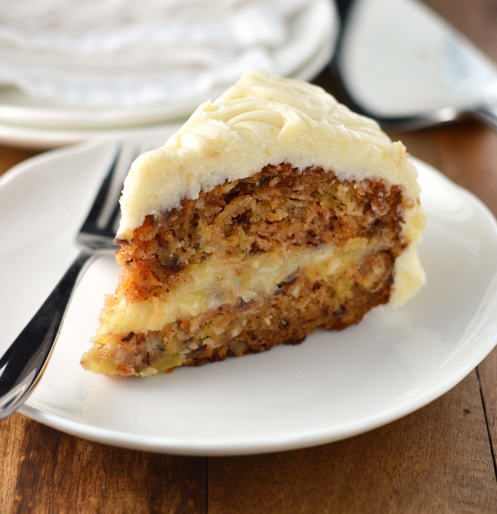

Carrot cake has been a staple of dessert items for at least like a couple years, and it tastes really good.
Thats why we made this website, to show how much we love it. Enjoy...
Carrot cake, oh you marvelous concoction of culinary quirkiness! You defy the norm with your orangey charm, sneaking vegetables into dessert like a mischievous veggie ninja. With each delectable bite, you unleash a symphony of flavors that dance a merry jig on the taste buds. The carrots, once humble root-dwellers, now revel in their sweet transformation, joining forces with cinnamon and nutmeg in a spicy tango of delight. The cream cheese frosting, like a fluffy cloud of dairy dreams, swoops in to envelop this vegetable circus in a creamy embrace. Together, they create a sugary spectacle that tickles the senses and leaves you wondering why every cake isn't blessed with the carrot's zesty zeal. Oh carrot cake, you're the whimsical wizard of the dessert realm, turning vegetables into a party on a plate!
Hey there, I'm Carrot Cake Connoisseur Carl! I'm on a mission to share the joy of carrot cake with the world. Join me as I hunt down the most mouthwatering carrot cake creations and whip up my own inventive twists. Let's savor the spiced goodness and revel in cream cheese frosting together!